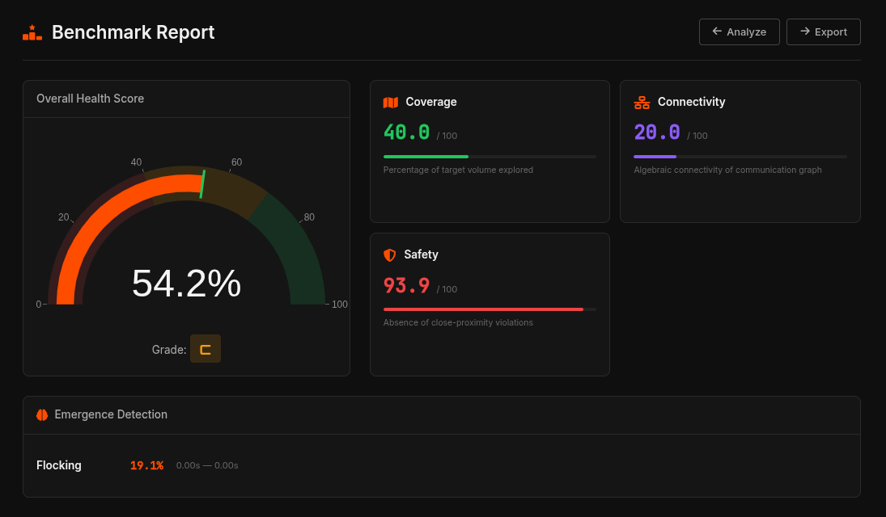

Evaluation & Benchmarks
To quantitatively measure the performance and emergence of different swarm algorithms, PyBullet Swarm Sim employs a rigorous offline and online evaluation suite. Instead of relying purely on visual observation, the framework calculates continuous spatial and kinetic metrics throughout the simulation lifecycle.

Core Emergence Metrics
The evaluation/ module analyzes the absolute positions of all $N$ drones at every timestep to compute a multi-dimensional health score based on four pillars:
- Coverage (Dispersion): Measures the spatial volume or area covered by the swarm, often calculated via the mean pairwise distance. High coverage is essential for exploration algorithms like Voronoi or Artificial Bee Colony.
- Cohesion: Evaluates how tightly the swarm groups together. It is calculated inversely as the standard deviation of drone distances from the swarm's Center of Mass (CoM).
- Connectivity: Assesses the robustness of the communication network. By applying a maximum communication radius threshold, an adjacency matrix is built to ensure the swarm graph remains fully connected without isolated nodes.
- Safety (Collision Avoidance): A critical metric that tracks near-misses and physical collisions. It counts the frequency of pairwise distances dropping below the physical drone boundaries (critical safety radius).
Calculation Logic
Under the hood, these metrics rely heavily on vectorized NumPy operations to process the (N, 3) position arrays rapidly without slowing down the physics timestep. Here is a conceptual snippet of how Cohesion and Safety are evaluated dynamically:
import numpy as np
from scipy.spatial.distance import pdist
def evaluate_swarm(positions, safety_radius=0.5):
"""
positions: (N, 3) array of drone coordinates
"""
# 1. Cohesion (Standard Deviation from Center of Mass)
center_of_mass = np.mean(positions, axis=0)
distances_to_com = np.linalg.norm(positions - center_of_mass, axis=1)
cohesion_score = 1.0 / (1.0 + np.std(distances_to_com))
# 2. Safety (Near-miss / Collision detection)
# pdist computes pairwise distances between all N drones O(N^2)
pairwise_dists = pdist(positions)
violations = np.sum(pairwise_dists < safety_radius)
safety_score = 1.0 if violations == 0 else (1.0 / violations)
return {
"cohesion": cohesion_score,
"safety": safety_score,
"violations": violations
}Automated Benchmarking
The dashboard's Benchmark Report tool (pictured above) aggregates these per-step metrics over the entire simulation duration, normalizing them into interactive radar charts. This allows researchers to immediately quantify behavioral trade-offs. For example, you can clearly observe how Artificial Potential Fields (APF) might sacrifice peak Coverage to maintain a strictly higher Safety score compared to Reynolds Boids Flocking.